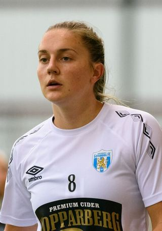

Ezzcoins › Player pages › Vilde Bøe Risa
80
CM

Bøe Risa
PAC75
SHO78
PAS76
DRI81
DEF71
PHY80
Photo (cropped): EL Loko Foto · CC BY 4.0 · Wikimedia Commons
Photo source
https://commons.wikimedia.org/wiki/File:Vilde_B%C3%B8e_Risa_20190925_(cropped).jpg
Licence: https://creativecommons.org/licenses/by/4.0
Vilde Bøe Risa
80 CM · NC Courage · NWSL ·  Norway
Norway
No console price yet. Add this player to your watchlist on Ezzcoins: the most-watched players get a price every hour.
82Meta rating · CM +2 vs overall · CDM 81 · CB 81 · CAM 80
PAC75
SHO78
PAS76
DRI81
DEF71
PHY80
- Position
- CM (also CDM, CAM, CB)
- Club
- NC Courage
- League
- NWSL
- Nation
- Norway
- Skill moves
- 3★
- Weak foot
- 4★
- Preferred foot
- Right
- Football
- Women's football
Meta rating: Ezzcoins' own estimate of how well this card plays in game, worked out from its stats for each position it can play, its skill moves, weak foot and PlayStyle+. An average card scores about its overall rating; higher means it plays above its rating.
Watch on Ezzcoins